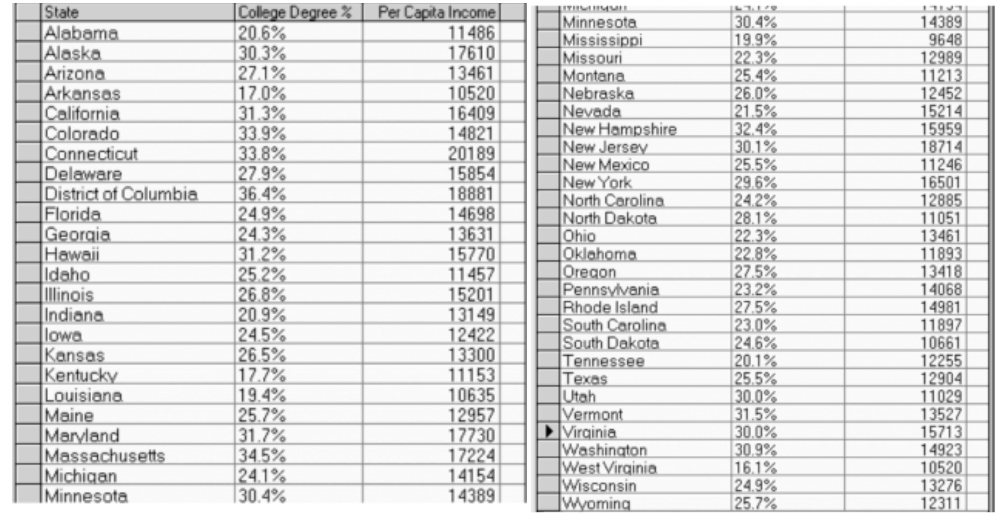
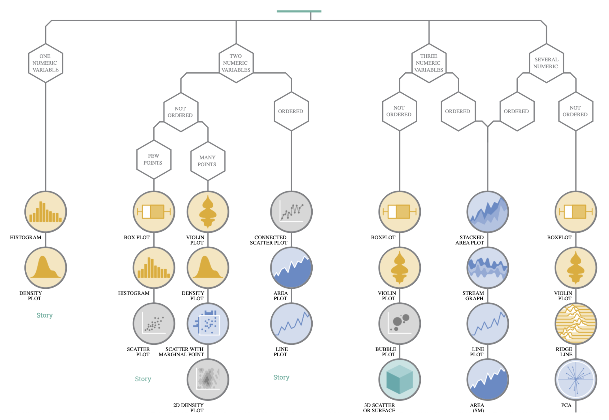
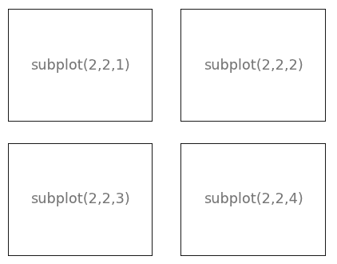
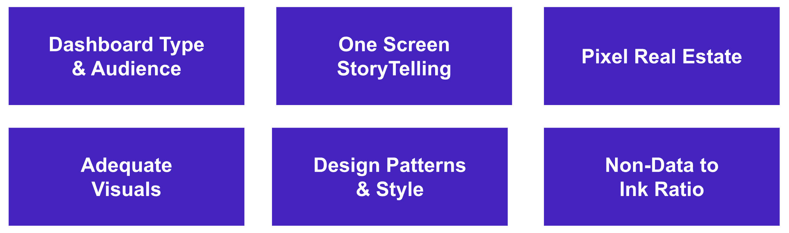

Data Viz & Dashboarding
Maîtriser les principes de la visualisation de données — choisir le bon type de graphique, utiliser pandas, matplotlib, seaborn et plotly selon les besoins — puis construire des dashboards interactifs avec Plotly Dash en Python.
- Cheatsheet — Data Viz & Dashboarding
- ️ Récapitulatif — Erreurs clés à éviter
- 1) Pourquoi visualiser les données ?
- 2) Quel graphique choisir ?
- 3) Exploration rapide avec pandas
- 4) Matplotlib — contrôle complet
- 5) Seaborn — visualisation statistique
- 6) Plotly Express — graphiques interactifs
- 7) Dashboarding — Principes
- 8) Construire un dashboard avec Plotly Dash
- Bibliographie
- Challenges
📋 Cheatsheet — Data Viz & Dashboarding
Choisir le bon graphique
| Type de données | Question | Graphique recommandé |
|---|---|---|
| Numérique continue | Distribution | histplot, kdeplot |
| Numérique continue | Comparer des distributions | boxplot, violinplot |
| Numérique continue | Évolution dans le temps | lineplot |
| Deux variables numériques | Relation / corrélation | scatterplot, regplot |
| Catégorielle | Comptage / proportion | countplot, barplot |
| Catégorielle × numérique | Distribution par groupe | boxplot, violinplot |
Pandas — exploration rapide
france_df['oil_co2'].plot() # lineplot rapide depuis une Series
france_df[['oil_co2', 'gas_co2']].plot() # plusieurs colonnes sur le même axe
france_df[['oil_co2', 'gas_co2']].sum().plot(kind='bar') # barplot des totaux
emissions_df.loc[2022].plot(kind='scatter', x='gdp', y='co2') # scatterplot sur une annéeMatplotlib — contrôle total
import matplotlib.pyplot as plt
## Tracer une ligne
plt.plot(france_df.index, france_df['co2']) # lineplot simple
plt.plot(france_df.index, france_df['oil_co2'], label='oil') # avec légende
plt.plot(france_df.index, france_df['gas_co2'], label='gas')
plt.legend() # affiche la légende
plt.show()
## Subplots — approche state-based
fig = plt.figure(figsize=(10, 3))
plt.subplot(1, 2, 1) # grille 1×2, position 1
plt.plot(france_df.index, france_df['oil_co2'])
plt.title('oil_co2')
plt.subplot(1, 2, 2) # grille 1×2, position 2
plt.plot(france_df.index, france_df['gas_co2'])
plt.title('gas_co2')
## Subplots — approche orientée objet (recommandée)
fig, axs = plt.subplots(1, 2, figsize=(10, 3)) # retourne fig + tableau d'axes
axs[0].plot(france_df.index, france_df['oil_co2']) # accès par index
axs[0].set_title('oil_co2')
axs[1].plot(france_df.index, france_df['gas_co2'])
axs[1].set_title('gas_co2')Seaborn — visualisation statistique
import seaborn as sns
tips_df = sns.load_dataset('tips')
## Distribution
sns.histplot(tips_df['total_bill'], kde=True) # histogramme + courbe KDE
sns.boxplot(data=tips_df, x='day', y='total_bill', hue='day') # boxplot par catégorie
sns.violinplot(data=tips_df, x='day', y='total_bill') # violinplot (distribution complète)
## Relation numérique
sns.scatterplot(data=tips_df, x='total_bill', y='tip', hue='smoker') # nuage de points coloré
sns.regplot(data=tips_df, x='total_bill', y='tip') # avec droite de régression
## Catégorielle
sns.countplot(data=tips_df, x='smoker') # comptage absolu
sns.countplot(data=tips_df, x='time', hue='smoker', stat='percent') # pourcentagePlotly Express — interactivité
import plotly.express as px
px.line(france_df, x=france_df.index, y='co2') # lineplot interactif
px.line(france_df, x=france_df.index, y=['oil_co2', 'gas_co2']) # plusieurs séries
px.scatter(emissions_df.query("year == 2022"),
x='population', y='co2', hover_name='country') # hover avec nom du pays
px.scatter(tips_df, x='total_bill', y='tip', color='smoker',
marginal_x='histogram', marginal_y='box', trendline='ols') # graphique enrichiDash — structure d'une app minimale
from dash import Dash, html, dcc, callback, Input, Output
import dash_bootstrap_components as dbc
import plotly.express as px
import pandas as pd
app = Dash(external_stylesheets=[dbc.themes.BOOTSTRAP]) # init avec Bootstrap
## Composants
header = html.H1("Dashboard", style={"textAlign": "center"}) # titre centré
graph = dcc.Graph(id="my_graph") # graphique (figure = via callback)
dropdown = dcc.Dropdown(id="my_dropdown",
options=[{"label": c, "value": c} for c in df["country"].unique()],
value="France") # dropdown avec valeur par défaut
## Callback : lie le dropdown au graphique
@callback(Output("my_graph", "figure"), Input("my_dropdown", "value"))
def update_graph(country):
filtered = df[df["country"] == country]
return px.line(filtered, x="year", y="co2", title=f"CO2 — {country}")
## Layout
app.layout = [
dbc.Row([dbc.Col(header, width=8), dbc.Col(dropdown, width=4)]),
dbc.Row([dbc.Col(graph, width=12)])
]
if __name__ == '__main__':
app.run(debug=True) # debug=True = rechargement auto⚠️ Récapitulatif — Erreurs clés à éviter
Utiliser un pie chart ou doughnut chart
❌ px.pie(...) — les angles sont difficiles à comparer visuellement
✅ Remplacer par un barplot ou un 100% stacked barplot
Choisir un graphique "fancy" plutôt qu'adapté
❌ Varier les types de graphiques pour "faire beau" sans raison
✅ Toujours se demander : Quel est l'objectif ? Quelle relation je veux montrer ? Puis consulter 👉 data-to-viz.com
Oublier les arguments obligatoires de seaborn
❌ sns.scatterplot('total_bill', 'tip') — syntaxe invalide
✅ Toujours passer data=, x=, y= explicitement : sns.scatterplot(data=df, x='total_bill', y='tip')
Confondre plt.subplot() et plt.subplots()
❌ plt.subplot(1, 2, 1) crée un subplot dans la figure courante (state-based, fragile)
✅ fig, axs = plt.subplots(1, 2) retourne un tableau d'axes — méthode orientée objet, recommandée
Spécifier figure= dans dcc.Graph quand un callback gère déjà ce graphique
❌ dcc.Graph(id="my_graph", figure=my_fig) + un @callback qui retourne aussi une figure → conflit
✅ Si un callback gère le graphique, ne mettre que dcc.Graph(id="my_graph") sans figure=
1) Pourquoi visualiser les données ?
Les tableaux bruts sont difficiles à lire. Un bon graphique permet de répondre immédiatement à des questions comme :
- Quel état a le revenu le plus élevé ?
- Y a-t-il une relation entre revenu et éducation ?
- Y a-t-il des outliers ?


La partie la plus difficile n'est pas le code, c'est de savoir quoi montrer et comment.
Avant de construire un graphique, se poser ces questions :
- Quel est l'objectif ? Qu'essaie-t-on de montrer ?
- Combien de dimensions ?
- La donnée est-elle continue ou discrète ?
- Est-ce facilement lisible ?
Un bon graphique est significatif et accessible. S'il a besoin d'une légende complexe pour être compris, il n'est probablement pas bon.
2) Quel graphique choisir ?
👉 From Data-to-viz — arbre de décision interactif

2.1 Évolution dans le temps → lineplot
Idéal pour montrer une tendance ou une progression.
2.2 Comparaison par catégorie → barplot
Variations : stacked barplot (composition), 100% stacked (proportions), horizontal (labels longs).
2.3 Distribution → histogram ou density plot
Pour visualiser comment les valeurs se répartissent sur une variable continue.
2.4 Comparer des distributions → boxplot ou violinplot
Pour comparer plusieurs groupes sur une même variable numérique.
2.5 Relation entre variables numériques → scatterplot
Pour visualiser une corrélation ou identifier des outliers.
Pie chart / Doughnut chart : à éviter. Les angles sont très difficiles à comparer visuellement. Préférer un barplot ou un 100% stacked barplot.
3) Exploration rapide avec pandas
3.1 Charger les données
import pandas as pd
## Télécharger le dataset CO2 (Our World in Data)
## !curl -s https://raw.githubusercontent.com/owid/co2-data/refs/heads/master/owid-co2-data.csv > emissions.csv
emissions_df = pd.read_csv("emissions.csv")
emissions_df = emissions_df.query("year >= 1950") # filtrer depuis 1950
emissions_df = emissions_df.set_index('year') # year comme index
france_df = emissions_df.query("country == 'France'") # filtrer sur la France
france_df.head()3.2 Graphiques pandas
france_df['oil_co2'].plot() # lineplot d'une colonne
france_df[['oil_co2', 'gas_co2']].plot() # deux colonnes superposées
france_df[['oil_co2', 'gas_co2']].sum()
## oil_co2 15437.942
## gas_co2 3806.681
france_df[['oil_co2', 'gas_co2']].sum().plot(kind='bar') # barplot des totaux
emissions_df.loc[2022].plot(kind='scatter', x='population', y='co2') # scatterplot 2022
emissions_df.loc[2022].plot(kind='scatter', x='gdp', y='co2')df.plot() est un wrapper sur matplotlib — pratique pour l'exploration rapide, mais limité pour la personnalisation.
4) Matplotlib — contrôle complet
4.1 Tracer une courbe simple
import matplotlib.pyplot as plt
plt.plot(france_df.index, france_df['co2']) # une courbe
plt.plot(france_df.index, france_df['oil_co2'], label='oil_co2')
plt.plot(france_df.index, france_df['gas_co2'], label='gas_co2')
plt.legend() # ⚠️ ne s'affiche pas sans legend()
plt.show()Avec matplotlib, tout doit être configuré manuellement : titre, labels, légende, taille. C'est puissant mais verbeux.
4.2 Subplots — Figure et Axes
Une Figure = la fenêtre entière. Elle contient un ou plusieurs Axes (sous-graphiques), arrangés en grille (nrow × ncol).

Approche state-based (séquentielle) :
fig = plt.figure(figsize=(10, 3)) # crée la figure (canvas)
plt.subplot(1, 2, 1) # grille 1×2, 1er subplot
plt.plot(france_df.index, france_df['oil_co2'])
plt.title('oil_co2')
plt.subplot(1, 2, 2) # grille 1×2, 2ème subplot
plt.plot(france_df.index, france_df['gas_co2'])
plt.title('gas_co2')Approche orientée objet (recommandée) :
fig, axs = plt.subplots(1, 2, figsize=(10, 3)) # retourne figure + tableau d'axes
axs[0].plot(france_df.index, france_df['oil_co2'])
axs[0].set_title('oil_co2')
axs[1].plot(france_df.index, france_df['gas_co2'])
axs[1].set_title('gas_co2')5) Seaborn — visualisation statistique
5.1 Présentation
import seaborn as sns
tips_df = sns.load_dataset('tips') # dataset restaurant : total_bill, tip, sex, smoker, day...Seaborn est construit au-dessus de matplotlib. Il fournit une interface haut niveau pour les graphiques statistiques. Syntaxe standard : data=, x=, y=, hue= (optionnel pour colorer par catégorie).
5.2 Histogramme et distribution
## Matplotlib vs Seaborn — comparaison
plt.figure(figsize=(10, 3))
plt.subplot(1, 2, 1)
plt.title('Matplotlib')
plt.hist(tips_df['total_bill']) # histogramme basique
plt.subplot(1, 2, 2)
plt.title('Seaborn')
sns.histplot(tips_df['total_bill'], kde=True) # histogramme + courbe de densité KDE5.3 Variables catégorielles
## Comptage simple
sns.countplot(data=tips_df, x="smoker") # nb de patrons fumeurs/non-fumeurs
## Comptage croisé (hue)
sns.countplot(data=tips_df, x="time", hue="smoker") # fumeurs le midi vs le soir ?
## Pourcentage
sns.countplot(data=tips_df, x="smoker", hue="smoker", stat="percent") # en %5.4 Distributions par catégorie
fig, axs = plt.subplots(2, 2, figsize=(10, 4))
sns.boxplot(data=tips_df, x='day', y='total_bill', hue='day', ax=axs[0, 0]) # IQR + outliers
sns.boxenplot(data=tips_df, x='day', y='total_bill', hue='day', ax=axs[0, 1]) # boxplot amélioré
sns.stripplot(data=tips_df, x='day', y='total_bill', hue='day', ax=axs[1, 0]) # points individuels
sns.violinplot(data=tips_df, x='day', y='total_bill', hue='day', ax=axs[1, 1]) # distribution complète5.5 Relation entre variables numériques
sns.scatterplot(data=tips_df, x="total_bill", y="tip", hue='smoker') # nuage de points coloré6) Plotly Express — graphiques interactifs
6.1 Présentation
Plotly propose deux API :
- Plotly Graph Objects (
go) : bas niveau, très personnalisable - Plotly Express (
px) : haut niveau, rapide et intuitif ← à utiliser en priorité
import plotly.express as px6.2 Exemples
## Lineplot interactif (hover, zoom, export)
px.line(france_df, x=france_df.index, y='co2')
## Plusieurs séries
px.line(france_df, x=france_df.index, y=['oil_co2', 'gas_co2'])
## Scatterplot avec hover_name (identifie les pays au survol)
px.scatter(emissions_df.query("year == 2022"),
x='population', y='co2', hover_name='country')
## Scatterplot enrichi : distribution marginale + régression OLS
px.scatter(tips_df, x='total_bill', y='tip', color='smoker',
marginal_x='histogram', marginal_y='box', trendline='ols')La syntaxe Plotly Express est très proche de Seaborn (data=, x=, y=, color=). La différence majeure : les graphiques Plotly sont interactifs (zoom, hover, export PNG).
7) Dashboarding — Principes
7.1 Définition
Un dashboard est un affichage visuel interactif de KPIs et métriques consolidés, conçu pour le monitoring et la prise de décision.
7.2 Bonnes pratiques

Avant de coder :
- Quel type de dashboard ? C-level (synthèse), Opérationnel (suivi temps réel), Analytique (exploration)
- Qui est l'audience ? Quelles métriques les aident à décider ?
Principes de design :
- One-Screen storytelling : éviter le scroll, limiter à 8 visuels max
- Pixel Real Estate : les zones top-gauche captent l'attention en premier (lecture en "Z") → y mettre les KPIs clés
- Visuels appropriés vs "fancy" : choisir selon l'objectif, pas pour varier
- Design consistant : palette, typographie, formats uniformes
- Ink for data : éviter les fonds colorés, animations décoratives, styles superflus
7.3 Accessibilité — WCAG
👉 Web Content Accessibility Guidelines
Les principes POUR :
- Perceivable — contraste couleur ≥ 4.5:1, ne pas transmettre d'info par la couleur seule
- Operable — navigable au clavier
- Understandable — labels clairs, navigation cohérente, pas de jargon
- Robust — compatible avec les technologies d'assistance (lecteurs d'écran…)
Quick wins :
- ✅ Contraste élevé et daltonisme : 👉 guide couleurs accessibles
- ✅ Texte suffisamment grand avec espacement adéquat
- ✅ Titres descriptifs pour chaque graphique
- ✅ Résumés textuels des insights visuels
8) Construire un dashboard avec Plotly Dash
8.1 Installation et structure minimale
pip install dash dash-bootstrap-components # installation des packages
mkdir ~/code/dash-project && cd $_ # création du dossier projet
curl https://raw.githubusercontent.com/owid/co2-data/refs/heads/master/owid-co2-data.csv > emissions.csv## minimal.py — squelette d'une app Dash
from dash import Dash, html, dcc
import plotly.express as px
import pandas as pd
app = Dash() # initialise l'application
## Charger les données
emissions_df = pd.read_csv("emissions.csv")
emissions_df = emissions_df.query("year >= 1950")
country_df = emissions_df.query("country == 'France'")
## Définir le layout (liste de composants)
app.layout = [
dcc.Graph(
id="country_co2",
figure=px.line(country_df, x="year", y="co2", title="CO2 emissions in France")
)
]
if __name__ == '__main__':
app.run(debug=True) # debug=True = rechargement automatique à chaque sauvegardepython minimal.py # lancer l'app
## → ouvrir http://127.0.0.1:8050/ dans le navigateur8.2 Ajouter un header HTML
from dash import html
app.layout = [
html.H1("CO2 emissions Dashboard", style={"textAlign": "center"}), # titre centré
dcc.Graph(id="country_co2", figure=...)
# html.H2, html.P, html.Div... → wrappers Python autour des balises HTML
]8.3 Layout en colonnes avec Bootstrap
import dash_bootstrap_components as dbc
app = Dash(external_stylesheets=[dbc.themes.BOOTSTRAP]) # Bootstrap = grille 12 colonnes
## Définir les composants séparément
header = html.H1("CO2 emissions Dashboard", style={"textAlign": "center"})
country_co2 = px.line(country_df, x="year", y="co2", title="CO2 emissions in France")
country_co2_split = px.line(country_df, x="year",
y=["oil_co2", "gas_co2", "coal_co2"],
title="CO2 by source in France")
## Layout avec ligne et colonnes (total = 12)
app.layout = [
header,
dbc.Row(children=[
dbc.Col(dcc.Graph(id='country_co2', figure=country_co2), width=8), # 8/12 de large
dbc.Col(dcc.Graph(id='country_co2_split', figure=country_co2_split), width=4) # 4/12 de large
])
]8.4 Ajouter de l'interactivité — Callbacks
from dash import callback, Input, Output
## Dropdown de sélection de pays
country_dropdown = dcc.Dropdown(
id="country_dropdown",
options=[{"label": c, "value": c} for c in emissions_df["country"].unique()],
value="France" # valeur par défaut
)
## Callback : relie le dropdown au graphique
@callback(
Output("country_co2", "figure"), # ce que la fonction retourne → propriété "figure" du Graph
Input("country_dropdown", "value") # paramètre de la fonction ← propriété "value" du Dropdown
)
def update_country_df(country): # country = valeur sélectionnée dans le dropdown
country_df = emissions_df[emissions_df["country"] == country]
fig = px.line(country_df, x="year", y="co2", title=f"CO2 emissions in {country}")
return fig # retourné vers l'Output → mis à jour dans le Graph
## Layout : ne pas passer figure= si un callback gère le graphique
app.layout = [
dbc.Row([dbc.Col(header, width=8), dbc.Col(country_dropdown, width=4)]),
dbc.Row([dbc.Col(dcc.Graph(id="country_co2"), width=12)]) # pas de figure= ici !
]Le décorateur @callback fait le lien entre composants. Input = ce qui déclenche la mise à jour (valeur du dropdown). Output = ce qui est mis à jour (figure du Graph). La fonction reçoit les valeurs des Inputs et retourne les valeurs des Outputs.
8.5 App multi-pages
## Structure du projet :
## ├── main.py
## └── pages/
## ├── home.py
## └── analysis.py
## Dans chaque page (ex: pages/home.py) :
import dash
dash.register_page(__name__) # remplace app = Dash()
layout = [html.H1("Home")] # remplace app.layout = ...
## (pas de if __name__ == '__main__')
## Dans main.py :
import dash
from dash import Dash, html, dcc
import dash_bootstrap_components as dbc
app = Dash(use_pages=True, external_stylesheets=[dbc.themes.BOOTSTRAP])
app.layout = html.Div([
html.H1('Multi-page app with Dash Pages'),
html.Div([
dcc.Link(f"{page['name']}", href=page["relative_path"])
for page in dash.page_registry.values()
]),
dash.page_container # zone où s'affiche la page active
])
if __name__ == '__main__':
app.run(debug=True)📚 Bibliographie
Visualisation de données — général
- 👉 Fundamentals of Data Visualization — Claus O. Wilke (livre en ligne)
- 👉 From Data to Viz — Yan Holtz (site + arbre de décision)
- 👉 Caveats — pièges courants en dataviz
- 👉 How to tell a great story with Data Viz
- 👉 Calling Bull — Carl Bergstrom & Jevin West (livre et site)
Références techniques
- 👉 Matplotlib cheatsheet (PDF)
- 👉 Seaborn cheatsheet (PDF)
- 👉 The many ways to call axes in Matplotlib
- 👉 Matplotlib gallery
- 👉 Seaborn gallery
- 👉 Plotly Python gallery
- 👉 Dash documentation
- 👉 Dash example gallery
🚀 Challenges
- Challenge : Transformer le notebook d'exploration CO2 en dashboard interactif avec Dash — dropdown de pays, layout en colonnes, callback pour mettre à jour les graphiques dynamiquement.
- 🧭 Introduction
- 1. Pourquoi visualiser les données ?
- 2. Quel graphique choisir ?
- 3. Exploration rapide avec pandas
- 4. Matplotlib — controle total
- 5. Seaborn — visualisation statistique
- 6. Plotly Express — graphiques interactifs
- 7. Principes de Dashboarding
- 8. Construire un dashboard avec Plotly Dash
- 🎯 Questions de vérification
- 📌 TL;DR
🧭 Introduction
La visualisation de données (ou "dataviz"), c'est l'art de transformer un tableau plein de chiffres en un graphique que n'importe qui peut comprendre en quelques secondes. C'est une compétence centrale en data science : on peut avoir le meilleur modèle du monde, si on ne sait pas le montrer, personne ne le comprend.
Dans ce cours, on va utiliser quatre outils Python complémentaires :
- pandas — pour tracer des graphiques rapides directement depuis un DataFrame, sans effort
- matplotlib — pour contrôler chaque détail d'un graphique (la "brique de base")
- seaborn — pour faire de beaux graphiques statistiques avec peu de code
- plotly + Dash — pour des graphiques interactifs et des dashboards qu'on peut partager
Analogie fil rouge : Imagine que tu es journaliste de données. Tu as un gros tableau Excel avec les émissions de CO2 de tous les pays depuis 1950. Ton objectif : raconter une histoire avec ces chiffres. Chaque outil que tu vas apprendre est un type d'appareil photo différent — du polaroid instantané (pandas) au reflex professionnel (matplotlib), jusqu'au studio photo interactif (Dash).
A retenir — Choisir le bon graphique
- Evolution dans le temps → lineplot (courbe)
- Comparer des catégories → barplot (barres)
- Voir comment une variable se distribue → histogramme ou boxplot
- Chercher une relation entre deux variables numériques → scatterplot (nuage de points)
- Ne jamais utiliser un pie chart (camembert) — les angles sont très difficiles à comparer visuellement, préfère toujours un barplot
Mini-plan du cours
- Pourquoi visualiser ?
- Comment choisir le bon graphique ?
- Exploration rapide avec pandas
- Controle total avec matplotlib
- Graphiques statistiques avec seaborn
- Graphiques interactifs avec plotly
- Principes de dashboarding
- Construire un dashboard avec Dash
1. Pourquoi visualiser les données ?
Regarde ce problème concret : tu as un tableau avec 50 pays et leur revenu moyen. Tu veux savoir quel pays est le plus riche. Face au tableau brut, tu dois lire ligne par ligne. Avec un barplot trié, la réponse saute aux yeux en une seconde.
Un bon graphique permet de répondre immédiatement à des questions comme :
- Quel pays a les emissions de CO2 les plus élevées ?
- Y a-t-il une relation entre le PIB d'un pays et ses emissions ?
- Y a-t-il des valeurs aberrantes (outliers) ?
La partie la plus difficile n'est pas d'écrire le code. C'est de savoir quoi montrer et comment le montrer. Avant de coder, pose-toi toujours ces questions : Quel est mon objectif ? Combien de variables je veux montrer ? Ma donnée est-elle continue (ex: temperature) ou discrète (ex: nombre de pays) ?
Un bon graphique est significatif et accessible. S'il a besoin d'une légende de trois paragraphes pour être compris, c'est qu'il n'est probablement pas bon.
2. Quel graphique choisir ?
C'est la question la plus importante. Voici le guide de survie :
| Ce que tu veux montrer | Type de donnée | Graphique recommandé |
|---|---|---|
| Evolution dans le temps | Numérique continue | lineplot (courbe) |
| Comparer des totaux par catégorie | Catégorielle | barplot (barres) |
| Comment les valeurs se répartissent | Numérique continue | histplot ou kdeplot |
| Comparer des distributions entre groupes | Catégorielle x numérique | boxplot ou violinplot |
| Relation entre deux variables numériques | Deux numériques | scatterplot |
| Compter des occurrences par catégorie | Catégorielle | countplot |
2.1 Lineplot — l'evolution dans le temps
Parfait quand l'axe X est une date ou une année. On voit immédiatement les tendances, les pics, les chutes.
Exemple concret : les emissions de CO2 de la France de 1950 a 2022. On trace une courbe — on voit tout de suite que les emissions ont monte jusqu'aux années 70, puis ont lentement diminué.
2.2 Barplot — comparer des catégories
Idéal pour comparer des valeurs entre plusieurs groupes. On peut aussi le faire en horizontal (pratique quand les labels sont longs), ou en "stacked" (barres empilées) pour montrer des compositions.
2.3 Histogramme — distribution d'une variable
Permet de voir comment les valeurs se répartissent. Est-ce que la plupart des restaurants ont des additions entre 10 et 20 euros, ou entre 30 et 50 euros ?
2.4 Boxplot / Violinplot — comparer des distributions
Le boxplot montre la médiane, les quartiles et les outliers. Le violinplot montre en plus la forme complète de la distribution (comme un histogramme rotatif).
2.5 Scatterplot — relation entre deux variables
Nuage de points. Chaque point = une observation. On cherche une tendance : est-ce que les pays plus riches emettent plus de CO2 ?
Pie chart et doughnut chart : à éviter. Notre cerveau est très mauvais pour comparer des angles. Est-ce que 30° vaut plus que 25° ? Difficile a dire. Avec des barres, la comparaison est immédiate. Remplace toujours un camembert par un barplot.
Ressource utile : le site data-to-viz.com propose un arbre de décision interactif. Tu lui dis combien de variables tu as et leur type, il te dit quel graphique utiliser.
3. Exploration rapide avec pandas
pandas n'est pas une bibliothèque de visualisation, mais il offre une methode .plot() qui permet de tracer des graphiques basiques directement depuis un DataFrame. C'est le "polaroid" : rapide, pratique pour explorer, mais peu personnalisable.
3.1 Charger les données
On va utiliser le dataset CO2 de "Our World in Data" qui contient les emissions de CO2 de tous les pays depuis 1900.
import pandas as pd
# Charger le fichier CSV dans un DataFrame
emissions_df = pd.read_csv("emissions.csv")
# Ne garder que les données depuis 1950
emissions_df = emissions_df.query("year >= 1950")
# Définir la colonne "year" comme index (l'axe X par défaut des graphiques)
emissions_df = emissions_df.set_index('year')
# Filtrer uniquement la France
france_df = emissions_df.query("country == 'France'")
france_df.head() # affiche les 5 premières lignes pour vérifierApres ce code, france_df est un DataFrame dont l'index est l'année (1950, 1951, ..., 2022) et les colonnes sont des variables comme co2, oil_co2, gas_co2, etc.
3.2 Tracer des graphiques avec pandas
# Graphique 1 : lineplot de l'emission CO2 de l'huile en France
france_df['oil_co2'].plot()
# Resultat attendu : une courbe qui monte de 1950 jusqu'aux annees 70,
# puis redescend progressivement jusqu'en 2022
# Graphique 2 : deux courbes superposées sur le même axe
france_df[['oil_co2', 'gas_co2']].plot()
# Resultat attendu : deux courbes de couleurs différentes sur le même graphique,
# avec une légende automatique
# Graphique 3 : barplot des totaux cumulés
france_df[['oil_co2', 'gas_co2']].sum().plot(kind='bar')
# .sum() calcule d'abord la somme sur toutes les années pour chaque colonne
# Resultat attendu : deux barres, une pour oil_co2 (~15 000 Mt) et une pour gas_co2 (~3 800 Mt)
# On voit immédiatement que le pétrole represente bien plus d'emissions que le gaz
# Graphique 4 : scatterplot population vs CO2 pour toutes les lignes de l'année 2022
emissions_df.loc[2022].plot(kind='scatter', x='population', y='co2')
# .loc[2022] selectionne toutes les lignes dont l'index (year) vaut 2022
# Resultat attendu : un nuage de points avec un pays très a droite (forte population)
# qui est probablement la Chine ou l'Indedf.plot() est un raccourci pratique pour l'exploration rapide. En arrière-plan, il utilise matplotlib. Mais pour personnaliser (titres, couleurs, tailles), il faut passer a matplotlib ou seaborn directement.
4. Matplotlib — controle total
matplotlib est la bibliothèque de référence pour la visualisation en Python. Presque tout ce qu'on utilisera par la suite (seaborn, pandas plot) est construit au-dessus. Elle est puissante mais plus verbeuse : tout doit être configuré manuellement.
4.1 Tracer une courbe simple
import matplotlib.pyplot as plt
# Tracer une seule courbe
plt.plot(france_df.index, france_df['co2'])
# france_df.index = les années (axe X)
# france_df['co2'] = les valeurs (axe Y)
plt.show()
# Resultat attendu : une courbe simple, sans titre ni légende
# Tracer deux courbes sur le même graphique avec légendes
plt.plot(france_df.index, france_df['oil_co2'], label='oil_co2') # 1ère courbe, étiquette "oil_co2"
plt.plot(france_df.index, france_df['gas_co2'], label='gas_co2') # 2ème courbe, étiquette "gas_co2"
plt.legend() # affiche la légende — OBLIGATOIRE, sinon rien n'apparait
plt.show()
# Resultat attendu : deux courbes de couleurs différentes (bleu et orange par défaut),
# avec une petite boîte de légende dans un coinAvec matplotlib, rien n'apparait automatiquement : ni titre, ni légende, ni labels sur les axes. Il faut tout demander explicitement avec plt.title(), plt.xlabel(), plt.ylabel(), plt.legend().
4.2 Subplots — plusieurs graphiques côte a côte
Parfois on veut afficher plusieurs graphiques cote a cote pour comparer. C'est ce qu'on appelle des "subplots".
Concept clé : une Figure = la fenetre entière (le "canvas"). Elle peut contenir un ou plusieurs Axes (chaque "sous-graphique"). On définit une grille nlignes × ncolonnes.
Il y a deux façons de faire des subplots avec matplotlib.
Méthode 1 — state-based (séquentielle) : on "navigue" de subplot en subplot. C'est plus simple a lire au debut, mais fragile dans les scripts complexes.
fig = plt.figure(figsize=(10, 3)) # crée la figure, taille 10 pouces de large × 3 de haut
plt.subplot(1, 2, 1) # grille 1 ligne × 2 colonnes, on active le subplot n°1
plt.plot(france_df.index, france_df['oil_co2']) # trace dans le subplot actif
plt.title('oil_co2') # titre du subplot actif
plt.subplot(1, 2, 2) # on active le subplot n°2 (a droite)
plt.plot(france_df.index, france_df['gas_co2']) # trace dans ce subplot
plt.title('gas_co2') # titre de ce subplot
# Resultat attendu : deux courbes côte a côte dans la même fenetreMéthode 2 — orientée objet (recommandée) : on récupère un tableau d'axes et on travaille directement dessus. C'est plus explicite et plus robuste.
fig, axs = plt.subplots(1, 2, figsize=(10, 3))
# plt.subplots() retourne DEUX choses : la figure et un tableau d'axes
# axs[0] = subplot de gauche, axs[1] = subplot de droite
axs[0].plot(france_df.index, france_df['oil_co2']) # trace dans le subplot 0 (gauche)
axs[0].set_title('oil_co2') # titre du subplot 0
axs[1].plot(france_df.index, france_df['gas_co2']) # trace dans le subplot 1 (droite)
axs[1].set_title('gas_co2') # titre du subplot 1
# Resultat attendu : identique a la methode 1, mais le code est plus clair et moins sujet aux bugsAttention a la confusion subplot vs subplots : plt.subplot(1, 2, 1) (sans s) active un subplot dans la figure courante. fig, axs = plt.subplots(1, 2) (avec s) crée une figure ET retourne un tableau d'axes. Prefere toujours la version avec s, orientée objet.
La notation axs[0].set_title(...) utilise un point . apres axs[0]. C'est parce qu'on appelle une méthode sur un objet Axes. Les méthodes sur un Axes commencent toujours par set_ (ex: set_title, set_xlabel, set_ylabel).
5. Seaborn — visualisation statistique
seaborn est une bibliothèque construite au-dessus de matplotlib. Elle offre une interface plus simple pour faire des graphiques statistiques élégants. Moins de code, plus beau résultat.
La syntaxe de seaborn est très régulière : on passe toujours data=, x=, y= (et optionnellement hue= pour colorer par catégorie).
import seaborn as sns
# Charger le dataset "tips" : données d'un restaurant (addition, pourboire, jour, fumeur...)
tips_df = sns.load_dataset('tips')
tips_df.head()
# Colonnes : total_bill (addition), tip (pourboire), sex, smoker, day, time, size5.1 Histogramme — distribution d'une variable
Comparons matplotlib et seaborn pour faire un histogramme de la même donnée.
import matplotlib.pyplot as plt
import seaborn as sns
fig, axs = plt.subplots(1, 2, figsize=(10, 3)) # 2 subplots côte a côte
# Subplot gauche : histogramme matplotlib
axs[0].set_title('Matplotlib')
axs[0].hist(tips_df['total_bill']) # histogramme brut, couleur grise par défaut
# Subplot droite : histogramme seaborn
axs[1].set_title('Seaborn')
sns.histplot(
tips_df['total_bill'], # la colonne a visualiser
kde=True, # kde=True ajoute une courbe de densité lissée par-dessus
ax=axs[1] # ax= précise dans quel subplot tracer (sinon seaborn trace ailleurs)
)
# Resultat attendu : le subplot seaborn est plus beau (couleur bleue, bordures claires,
# courbe en cloche par-dessus), avec la méme distribution visible dans les deux.
# La courbe KDE montre que la plupart des additions sont entre 10 et 20 dollars.5.2 Countplot — compter des catégories
On veut savoir combien de clients fumeurs vs non-fumeurs il y a dans le dataset.
# Comptage simple
sns.countplot(data=tips_df, x="smoker")
# Resultat attendu : deux barres, "Yes" et "No", montrant qu'il y a plus de non-fumeurs
# Comptage croisé avec hue — fumeurs vs non-fumeurs, séparés par moment de la journée
sns.countplot(data=tips_df, x="time", hue="smoker")
# x="time" : axe X = Lunch ou Dinner
# hue="smoker" : chaque barre est subdivisée en 2 couleurs (Yes/No pour smoker)
# Resultat attendu : 4 barres (Lunch Yes, Lunch No, Dinner Yes, Dinner No),
# montrant qu'il y a plus de fumeurs le soir que le midi (proportionnellement)
# En pourcentage plutot qu'en valeur absolue
sns.countplot(data=tips_df, x="smoker", hue="smoker", stat="percent")
# stat="percent" remplace les comptages bruts par des pourcentages5.3 Boxplot, Violinplot — comparer des distributions par groupe
On veut savoir si les additions varient selon le jour de la semaine.
fig, axs = plt.subplots(2, 2, figsize=(10, 8)) # grille 2 lignes × 2 colonnes
sns.boxplot(
data=tips_df,
x='day', # axe X : les jours (Thur, Fri, Sat, Sun)
y='total_bill', # axe Y : le montant de l'addition
hue='day', # colorier les boîtes par jour (juste pour la couleur)
ax=axs[0, 0] # placer dans la case [ligne 0, colonne 0]
)
# Resultat attendu : 4 boîtes côte a côte. Chaque boîte montre :
# - la ligne du milieu = médiane de l'addition ce jour-là
# - la boîte = 50% des valeurs les plus "centrales" (interquartile)
# - les traits = étendue totale
# - les points isolés = outliers (additions anormalement hautes)
sns.violinplot(
data=tips_df,
x='day',
y='total_bill',
hue='day',
ax=axs[1, 1] # placer dans la case [ligne 1, colonne 1]
)
# Resultat attendu : des "violons" dont la largeur varie selon la densité.
# Plus le violon est large a un endroit, plus les valeurs se concentrent la.
# C'est comme un histogramme qu'on a "couché" et rendu symétrique.axs[0, 0] ou axs[1, 1] c'est la notation pour accéder a une case dans une grille 2D. axs[ligne, colonne] — comme les indices d'une matrice.
5.4 Scatterplot — relation entre deux variables numériques
On veut voir si le montant de l'addition prédit le pourboire, et si les fumeurs se comportent différemment.
sns.scatterplot(
data=tips_df,
x="total_bill", # axe X : montant de l'addition
y="tip", # axe Y : pourboire
hue='smoker' # couleur des points : bleu = non-fumeur, orange = fumeur
)
# Resultat attendu : un nuage de points avec une tendance générale a la hausse
# (plus l'addition est grande, plus le pourboire est grand).
# Les points bleus et orange sont mélangés — les fumeurs ne semblent pas plus généreux.Erreur classique avec seaborn : ne jamais écrire sns.scatterplot('total_bill', 'tip'). seaborn exige des arguments nommés. Toujours écrire data=, x=, y= explicitement.
6. Plotly Express — graphiques interactifs
Jusqu'ici, tous nos graphiques étaient statiques. Avec Plotly, les graphiques deviennent interactifs : on peut zoomer, déplacer la vue, survoler les points pour voir les détails, et exporter en PNG.
Il existe deux niveaux d'API dans Plotly :
- Plotly Graph Objects (
go) : bas niveau, très personnalisable mais verbeux - Plotly Express (
px) : haut niveau, simple et rapide — c'est celui qu'on utilise
La syntaxe de px est très proche de seaborn (x=, y=, color= au lieu de hue=).
import plotly.express as px6.1 Lineplot interactif
# Lineplot de base — interactif
fig = px.line(france_df, x=france_df.index, y='co2')
fig.show()
# Resultat attendu : une courbe interactive. On peut zoomer en sélectionnant une zone,
# double-cliquer pour revenir a la vue initiale, survoler un point pour voir l'année et la valeur exacte.
# Plusieurs séries sur le même graphique
fig = px.line(france_df, x=france_df.index, y=['oil_co2', 'gas_co2'])
fig.show()
# Resultat attendu : deux courbes de couleurs différentes avec une légende interactive.
# On peut cliquer sur un item de la légende pour masquer/afficher une courbe.6.2 Scatterplot avec hover
fig = px.scatter(
emissions_df.query("year == 2022"), # filtrer sur l'année 2022 seulement
x='population', # axe X : population du pays
y='co2', # axe Y : emissions CO2
hover_name='country' # au survol d'un point, afficher le nom du pays
)
fig.show()
# Resultat attendu : un nuage de points. En survolant chaque point,
# on voit apparaître le nom du pays. On identifie facilement la Chine
# (tres a droite et tres en haut), les USA (haut, moins a droite), etc.6.3 Scatterplot enrichi
fig = px.scatter(
tips_df,
x='total_bill', # axe X : addition
y='tip', # axe Y : pourboire
color='smoker', # couleur par fumeur/non-fumeur
marginal_x='histogram', # ajoute un histogramme de x en haut du graphique
marginal_y='box', # ajoute un boxplot de y sur le cote droit
trendline='ols' # ajoute une droite de régression (tendance linéaire)
)
fig.show()
# Resultat attendu : un graphique "enrichi" avec 3 zones :
# - au centre : le scatterplot principal
# - en haut : deux histogrammes (un par groupe fumeur/non-fumeur) montrant la distribution des additions
# - a droite : deux boxplots montrant la distribution des pourboires par groupe
# - sur le scatterplot : deux droites de régression, une par groupeLa syntaxe Plotly Express est tres proche de seaborn. La principale difference : les graphiques Plotly sont interactifs (zoom, hover, export). Pour des notebooks ou des présentations, c'est souvent plus impressionnant et plus utile.
7. Principes de Dashboarding
Un dashboard est une page (ou application) qui regroupe plusieurs graphiques et indicateurs pour permettre a un utilisateur de surveiller une situation ou d'explorer des données. Pense a un tableau de bord de voiture : tout ce dont tu as besoin est visible d'un coup d'oeil.
7.1 Trois types de dashboards
- C-level (stratégique) : synthèse pour les dirigeants. Peu de chiffres, très clairs, vision globale.
- Opérationnel : suivi en temps réel. Alertes, métriques de performance, pour les équipes terrain.
- Analytique : exploration. Pour les analystes qui veulent creuser dans les données.
7.2 Bonnes pratiques de design
Avant de coder quoi que ce soit, réponds a ces deux questions :
- Quel type de dashboard ? (voir ci-dessus)
- Qui est l'audience ? Quelles décisions dois-je l'aider a prendre ?
Principes clés :
- One-screen storytelling : tout doit tenir sur un écran, sans scroll. Limiter a 8 visuels maximum.
- Pixel Real Estate : l'oeil humain lit en "Z" — il commence en haut a gauche. Mets tes indicateurs les plus importants en haut a gauche.
- Visuels appropriés : choisis le graphique selon l'objectif, pas pour "varier" ou "faire beau".
- Design consistant : meme palette de couleurs, meme typographie partout.
- Ink for data : chaque element visuel doit servir a quelque chose. Pas de fonds colorés décoratifs, pas d'animations inutiles.
7.3 Accessibilité
Un bon dashboard doit être utilisable par tout le monde, y compris les personnes malvoyantes ou daltoniennes.
- Contraste : ratio de contraste ≥ 4.5:1 entre texte et fond
- Ne pas transmettre d'info uniquement par la couleur : ajouter des formes ou des labels
- Texte suffisamment grand avec un espacement adéquat
- Titres descriptifs pour chaque graphique (pas juste "Graphique 1")
- Navigation au clavier possible
Le daltonisme touche environ 8% des hommes. Si ton dashboard utilise rouge/vert pour signifier "mauvais/bon", une partie de ton audience ne verra pas la différence. Utilise plutot des formes, des textes, ou une palette conçue pour les daltoniens.
8. Construire un dashboard avec Plotly Dash
Dash est un framework Python qui permet de créer des applications web interactives avec des graphiques Plotly, sans écrire une seule ligne de HTML ou de JavaScript. Tout se fait en Python.
L'installation :
# Dans le terminal :
# pip install dash dash-bootstrap-components8.1 App minimale — le squelette
# fichier : minimal.py
from dash import Dash, html, dcc # on importe les briques de base
import plotly.express as px
import pandas as pd
app = Dash() # crée l'application Dash
# Charger et préparer les données
emissions_df = pd.read_csv("emissions.csv")
emissions_df = emissions_df.query("year >= 1950")
country_df = emissions_df.query("country == 'France'") # filtrer sur la France
# Définir le layout : la liste des composants qui s'affichent sur la page
app.layout = [
dcc.Graph( # un composant graphique interactif
id="country_co2", # identifiant unique (important pour les callbacks)
figure=px.line(country_df, x="year", y="co2", # la figure Plotly a afficher
title="CO2 emissions in France")
)
]
if __name__ == '__main__':
app.run(debug=True) # debug=True : l'app se recharge automatiquement a chaque sauvegardePour lancer l'app : python minimal.py puis ouvrir http://127.0.0.1:8050/ dans le navigateur.
Resultat attendu : une page blanche avec un seul graphique interactif — la courbe des emissions de CO2 en France depuis 1950.
8.2 Ajouter du HTML et un titre
Dans Dash, on n'écrit pas de HTML directement. On utilise des composants Python du module html qui correspondent aux balises HTML standard.
from dash import html
app.layout = [
html.H1( # balise <h1> = titre principal
"CO2 emissions Dashboard",
style={"textAlign": "center"} # style CSS en dictionnaire Python
),
html.P("Données : Our World in Data (1950-2022)"), # balise <p> = paragraphe
dcc.Graph(id="country_co2", figure=...)
]
# html.H1, html.H2, html.P, html.Div... correspondent aux balises HTML habituelles8.3 Layout en colonnes avec Bootstrap
Pour organiser plusieurs graphiques côte a côte, on utilise dash-bootstrap-components qui fournit une grille de 12 colonnes (comme dans les sites web modernes).
import dash_bootstrap_components as dbc
from dash import Dash, html, dcc
import plotly.express as px
app = Dash(external_stylesheets=[dbc.themes.BOOTSTRAP]) # activer Bootstrap
# Préparer deux figures
fig1 = px.line(country_df, x="year", y="co2", title="CO2 total en France")
fig2 = px.line(country_df, x="year", y=["oil_co2", "gas_co2", "coal_co2"],
title="CO2 par source en France")
app.layout = [
html.H1("CO2 Dashboard", style={"textAlign": "center"}),
dbc.Row(children=[ # Row = une ligne dans la grille
dbc.Col( # Col = une colonne
dcc.Graph(id='fig1', figure=fig1),
width=8 # 8 colonnes sur 12 = 66% de large
),
dbc.Col(
dcc.Graph(id='fig2', figure=fig2),
width=4 # 4 colonnes sur 12 = 33% de large
)
])
]
# Resultat attendu : un titre centré en haut, puis deux graphiques côte a côte.
# Le premier (fig1) occupe 2/3 de la largeur, le second (fig2) occupe 1/3.La grille Bootstrap fait toujours 12 colonnes au total. width=8 + width=4 = 12. Tu peux faire 6 + 6 pour deux moitiés égales, ou 4 + 4 + 4 pour trois tiers.
8.4 Interactivité avec les Callbacks
Jusqu'ici, le dashboard est statique : la figure est calculée une fois au chargement. Pour le rendre interactif (ex: choisir un pays dans un menu déroulant et mettre a jour le graphique), on utilise les callbacks.
Un callback, c'est une fonction Python décorée avec @callback qui définit :
- un Input : "quand ceci change..."
- un Output : "...met a jour cela"
from dash import Dash, html, dcc, callback, Input, Output
import dash_bootstrap_components as dbc
import plotly.express as px
import pandas as pd
app = Dash(external_stylesheets=[dbc.themes.BOOTSTRAP])
emissions_df = pd.read_csv("emissions.csv")
emissions_df = emissions_df.query("year >= 1950")
# Composant 1 : un titre
header = html.H1("CO2 Dashboard", style={"textAlign": "center"})
# Composant 2 : un menu déroulant (dropdown) pour choisir le pays
country_dropdown = dcc.Dropdown(
id="country_dropdown", # identifiant pour le callback
options=[ # liste des options
{"label": c, "value": c} # label = texte affiché, value = valeur interne
for c in emissions_df["country"].unique() # une option par pays unique
],
value="France" # valeur sélectionnée par défaut
)
# Composant 3 : un graphique (sans figure= car un callback va la gérer)
graph = dcc.Graph(id="country_co2") # PAS de figure= ici !
# Le callback : lie le dropdown au graphique
@callback(
Output("country_co2", "figure"), # SORTIE : met a jour la propriété "figure" du composant "country_co2"
Input("country_dropdown", "value") # ENTRÉE : quand la propriété "value" de "country_dropdown" change
)
def update_graph(country): # la fonction reçoit la valeur du dropdown en paramètre
filtered = emissions_df[emissions_df["country"] == country] # filtrer sur le pays choisi
fig = px.line(filtered, x="year", y="co2",
title=f"CO2 emissions in {country}") # créer la figure pour ce pays
return fig # retourner la figure → elle sera envoyée a l'Output
# Layout : assembler les composants
app.layout = [
dbc.Row([
dbc.Col(header, width=8), # titre a gauche (8/12)
dbc.Col(country_dropdown, width=4) # dropdown a droite (4/12)
]),
dbc.Row([
dbc.Col(graph, width=12) # graphique sur toute la largeur
])
]
if __name__ == '__main__':
app.run(debug=True)Resultat attendu : une page avec un titre centré, un menu déroulant a droite, et un grand graphique en dessous. Quand on change le pays dans le menu, le graphique se met a jour instantanément avec les données du nouveau pays sélectionné, sans recharger la page.
Erreur classique : mettre a la fois figure=ma_figure dans dcc.Graph(...) ET un @callback qui retourne aussi une figure pour ce même composant. Les deux entrent en conflit. Règle simple : si un callback gère un graphique, ne mets PAS figure= dans dcc.Graph().
Le décorateur @callback fonctionne comme un "abonnement". Dash surveille en permanence la valeur du dropdown. Des qu'elle change, il appelle automatiquement update_graph() avec la nouvelle valeur, récupère ce qu'elle retourne, et met a jour le graphique. Tout ça sans que tu aies a gérer des evenements manuellement.
8.5 App multi-pages
Quand le dashboard grandit, on peut le découper en plusieurs pages. Chaque page est un fichier Python séparé dans un dossier pages/.
# Structure du projet :
# ├── main.py ← point d'entrée
# └── pages/
# ├── home.py ← page d'accueil
# └── analysis.py ← page d'analyse
# Dans chaque page, ex: pages/home.py
import dash
from dash import html
dash.register_page(__name__) # enregistre ce fichier comme une page Dash
# __name__ donne automatiquement le nom du fichier
layout = [ # remplace app.layout
html.H1("Page d'accueil"),
html.P("Bienvenue sur le dashboard CO2")
]
# Pas de app = Dash() ni de if __name__ == '__main__' dans les pages !# Dans main.py : le point d'entrée qui orchestre tout
import dash
from dash import Dash, html, dcc
import dash_bootstrap_components as dbc
app = Dash(
use_pages=True, # activer le système multi-pages
external_stylesheets=[dbc.themes.BOOTSTRAP]
)
app.layout = html.Div([
html.H1('Dashboard CO2 — Multi-pages'),
html.Div([
dcc.Link(f"{page['name']}", href=page["relative_path"]) # un lien par page enregistrée
for page in dash.page_registry.values() # page_registry = toutes les pages trouvées
]),
dash.page_container # zone dans laquelle s'affiche le contenu de la page active
])
if __name__ == '__main__':
app.run(debug=True)🎯 Questions de vérification
- Tu as une colonne
temperaturemesurée chaque jour pendant 2 ans. Quel graphique utilises-tu pour voir l'évolution dans le temps, et quel graphique pour voir comment les températures se distribuent ?
Réfléchis avant de lire la réponse : évolution dans le temps → lineplot. Distribution → histogramme ou sns.histplot().
- Quelle est la différence entre
plt.subplot(1, 2, 1)etfig, axs = plt.subplots(1, 2)? Laquelle est recommandée et pourquoi ?
plt.subplot() (sans s) navigue dans la figure courante de façon séquentielle — c'est fragile. plt.subplots() (avec s) retourne un tableau d'axes que tu manipules directement par index — c'est la méthode orientée objet, recommandée car plus explicite et moins sujette aux erreurs.
- Dans une app Dash, tu veux qu'un dropdown permette de changer le pays affiché dans un graphique. Que mets-tu dans
Input, dansOutput, et que fait la fonction du callback ?
Input = la propriété value du dropdown. Output = la propriété figure du composant dcc.Graph. La fonction reçoit la valeur sélectionnée dans le dropdown, filtre les données, crée une figure Plotly et la retourne.
- Pourquoi faut-il éviter les pie charts (camemberts) en dataviz ?
Parce que le cerveau humain est très mauvais pour comparer des angles. Il est très difficile de dire si un secteur de 30° est plus grand qu'un de 25°. Avec un barplot, la comparaison est immédiate (longueur de barre). Exception très limitée : montrer 2 ou 3 parts très différentes (ex: 80% vs 20%) où la difference est évidente.
📌 TL;DR
- Choisir le bon graphique d'abord : lineplot pour le temps, barplot pour les catégories, histogramme pour les distributions, boxplot pour comparer des groupes, scatterplot pour les corrélations. Eviter les camemberts.
- pandas
.plot()= exploration rapide, peu personnalisable. - matplotlib = controle total mais verbeux ; préférer l'approche orientée objet avec
fig, axs = plt.subplots(). - seaborn = graphiques statistiques élégants en peu de code ; syntaxe
data=,x=,y=,hue=toujours explicite. - Plotly Express = meme syntaxe que seaborn mais graphiques interactifs (zoom, hover, export).
- Dash = framework pour créer des dashboards Python interactifs ; trois briques :
html(mise en page),dcc(composants interactifs),@callback(réactivité). - Callback = la magie de Dash :
Inputdéclenche,Outputest mis a jour, la fonction fait la logique. - Dashboarding = penser audience avant code ; one-screen, layout en Z, visuels appropriés pas "fancy".
- Accessibilité : contraste suffisant, ne pas transmettre d'info uniquement par la couleur, titres descriptifs.
- Ressource clé : data-to-viz.com pour choisir le bon graphique face a n'importe quel jeu de données.
A. Concepts du cours
Pourquoi visualiser
La visualisation a deux objectifs distincts qui ne devraient pas être confondus :
1. Exploration (vous, en EDA) : visualisations rapides, sales, jetables. L'objectif est de comprendre votre dataset. Vous tracez 50 graphiques, vous en gardez 3 dans votre tête. Pas de titre, pas de légende polie, pas de palette soignée — juste plt.plot().
2. Communication (vous → votre audience) : visualisations soignées, légendées, polished. L'objectif est de convaincre ou informer. Vous tracez 1 graphique mais vous y passez du temps : titre explicite, annotations, palette accessible, légende lisible.
Un graphique bien conçu montre instantanément ce qu'un tableau de chiffres prend des minutes à expliquer. C'est un raccourci cognitif puissant — mais aussi un piège : un graphique mal conçu trompe instantanément et la confiance perdue est difficile à regagner.
Analogie célèbre — le quartet d'Anscombe : quatre datasets ayant exactement la même moyenne, variance, corrélation et droite de régression — mais des formes radicalement différentes (linéaire, courbe, outlier dominant, vertical). Sans visualisation, vous concluriez qu'ils sont identiques. Avec visualisation, vous voyez immédiatement qu'ils racontent quatre histoires différentes. C'est exactement pourquoi df.describe() ne suffit jamais — il faut tracer.
Choisir le bon type de graphique
| Question | Graphique adapté |
|---|---|
| Distribution d'une variable | Histogramme, KDE, boxplot |
| Comparer plusieurs distributions | Boxplot multiple, violin plot, ridgeline |
| Relation entre 2 variables continues | Scatter plot |
| Évolution dans le temps | Line plot |
| Comparer des catégories | Bar chart |
| Composition (parties d'un tout) | Bar empilé > pie chart |
| Corrélations multiples | Heatmap, pair plot |
| Données géographiques | Carte (folium, plotly_geo) |
Règle rapide : une variable ? Distribution. Deux continues ? Scatter. Deux mixtes (une catégorielle) ? Boxplot/bar. Trois+ ? Couleur, taille, facet.
import seaborn as sns
import matplotlib.pyplot as plt
# Distribution d'une variable numérique
sns.histplot(df["price"], bins=30, kde=True)
# Comparer la distribution par groupe
sns.boxplot(data=df, x="city", y="price")
# Relation entre deux variables + 3e en couleur
sns.scatterplot(data=df, x="area", y="price", hue="city", alpha=0.5)
# Évolution temporelle
sns.lineplot(data=df, x="date", y="revenue")À bannir : (1) Pie charts dès qu'il y a plus de 4-5 catégories — l'œil humain est mauvais pour comparer des angles. (2) 3D charts sauf cas exceptionnel — la perspective fausse les comparaisons. (3) Doubles axes Y — induisent en erreur sur les corrélations. Préférez deux graphiques côte à côte. (4) Couleurs arc-en-ciel / jet — utilisez des palettes accessibles (viridis, colorblind) compatibles avec les daltoniens.
Matplotlib, Seaborn, Plotly
| Bibliothèque | Force | Cas d'usage |
|---|---|---|
| Matplotlib | Contrôle absolu, basse couche | Graphiques publication, custom |
| Seaborn | API haut niveau, beau par défaut | EDA, statistiques |
| Plotly | Interactif, web | Dashboards, présentations |
| Plotnine | Grammar of Graphics (ggplot2) | Si vous venez de R |
| Altair | Vega-Lite, déclaratif | Notebooks et publication |
import matplotlib.pyplot as plt
import seaborn as sns
# Matplotlib pur : verbeux mais contrôle total
fig, ax = plt.subplots(figsize=(8, 5)) # figure 8×5 pouces
ax.scatter(df["x"], df["y"], alpha=0.5) # alpha = transparence
ax.set_xlabel("X")
ax.set_ylabel("Y")
ax.set_title("Title")
plt.tight_layout() # évite les labels coupés
plt.show()
# Seaborn — plus court et plus joli
sns.scatterplot(data=df, x="x", y="y", hue="category")
# Une ligne pour le graphique + la légende + la palette de couleurs
plt.show()Bonne pratique : utilisez Seaborn pour 80% de vos graphes (EDA). Quand vous avez besoin d'un graphique précis pour une publication, descendez à Matplotlib pour le polish (Seaborn s'appuie dessus, donc les objets ax sont compatibles). Plotly seulement si vous avez besoin d'interactivité (zoom, tooltip, filtre).
Anatomie d'une figure publication-ready
Une figure professionnelle a 6 éléments soignés :
- Titre : explicite, idéalement la conclusion ("Les ventes ont triplé en 2024", pas "Ventes mensuelles")
- Axes labellisés avec unités ("Revenue ($M)", "Time (months)")
- Légende lisible, positionnée intelligemment
- Source des données en bas (data: kaggle.com/...)
- Annotations pour pointer les points clés
- Couleurs professionnelles et accessibles
import matplotlib.pyplot as plt
plt.style.use("seaborn-v0_8-whitegrid") # style propre et neutre
fig, ax = plt.subplots(figsize=(10, 6), dpi=150) # dpi élevé = haute résolution
ax.plot(df["month"], df["revenue"],
color="#2E86AB", # bleu professionnel
linewidth=2.5,
marker="o") # marque les points
# Titre : la CONCLUSION, pas juste le sujet
ax.set_title("Revenue tripled in 2024 after product redesign",
fontsize=14, fontweight="bold", loc="left")
ax.set_xlabel("Month", fontsize=11)
ax.set_ylabel("Revenue ($M)", fontsize=11)
# Retirer les bordures inutiles (chartjunk minimaliste)
ax.spines["top"].set_visible(False)
ax.spines["right"].set_visible(False)
# Annotation pour le moment clé
ax.annotate("Redesign launch",
xy=("2024-03", 5), xytext=("2024-01", 8),
arrowprops=dict(arrowstyle="->", color="gray"))
# Source en bas à droite
fig.text(0.95, 0.02, "Source: internal analytics",
fontsize=8, ha="right", color="gray")
plt.tight_layout()
plt.savefig("revenue.png", dpi=300, bbox_inches="tight")Résultat attendu : un slide exec-ready en 1 image, 5 secondes de lecture, titre qui dit la conclusion.
B. Compléments avancés
Encoding visuel et perception
Cleveland & McGill (1984) ont mesuré expérimentalement la précision avec laquelle l'œil humain compare différents encodages visuels. Le classement, du plus précis au moins précis :
- Position sur une échelle commune (le scatter plot, le bar chart)
- Position sur des échelles non alignées
- Longueur
- Direction / angle
- Aire
- Volume
- Couleur (saturation, teinte)
Lecture : plus on descend dans la liste, plus l'œil humain est imprécis. Un humain distingue 2% de différence en position, 10% en longueur, 25% en couleur. Pour comparer précisément, utilisez les encodages du haut de la liste.
Conséquence : pour faire comparer précisément deux valeurs, utilisez la position (bar chart) plutôt que l'aire (pie chart) ou la couleur (heatmap). Les heatmaps sont efficaces pour repérer des patterns globaux, pas pour comparer des valeurs individuelles.
Exemple chiffré : sur un pie chart avec 3 parts de 32%, 33% et 35%, l'œil ne les distingue quasiment pas (angles de 115°, 119°, 126°). Sur un bar chart, ces 3 valeurs se distinguent immédiatement par la longueur des barres.
Analogie : votre cerveau est un compresseur de données visuel avec des biais. Il repère immédiatement les positions et longueurs, mais peine sur les angles et les aires. Quand vous concevez un graphique, choisissez l'encodage qui correspond à l'importance de la précision attendue. Pour de l'exploration rapide, une heatmap est suffisante. Pour un slide qui décide d'un budget, un bar chart est plus honnête.
Palettes de couleurs :
- Séquentielle :
viridis,plasma,magma— pour des données ordonnées de petit à grand - Divergente :
coolwarm,RdBu— pour des valeurs centrées (corrélations entre -1 et 1) - Catégorielle :
tab10,Set2— pour des classes discrètes sans ordre
# Sélection idiomatique
sns.heatmap(corr_matrix, cmap="RdBu_r", center=0, vmin=-1, vmax=1) # divergente, centrée sur 0
sns.scatterplot(data=df, x="x", y="y", hue="time", palette="viridis") # séquentielle
sns.barplot(data=df, x="category", y="value", palette="tab10") # catégorielleviridis est devenu le standard parce qu'il est lisible en niveaux de gris, accessible aux daltoniens, et perceptuellement uniforme (deux points également distants en valeur sont également distants visuellement).
Piège couleur : la palette jet (arc-en-ciel) est encore le défaut de beaucoup de tutoriels mais elle est trompeuse : elle a des sauts perceptuels non uniformes (le jaune central apparaît plus lumineux que le vert), illisible en niveaux de gris, et pas accessible aux daltoniens. À bannir définitivement.
Dashboarding : Streamlit, Dash, Tableau
Quand vos analyses doivent être consultées par d'autres en autonomie, vous passez de "graphique statique" à "dashboard interactif".
| Outil | Type | Cas d'usage | Coût |
|---|---|---|---|
| Streamlit | Code Python pur | Prototypes ML, démos rapides | Gratuit, OSS |
| Dash (Plotly) | Code Python | Dashboards complexes, customisables | Gratuit (version OSS) |
| Gradio | Code Python ML-first | Démos modèles, interfaces UI | Gratuit, OSS |
| Tableau | No-code | BI corporate, exec dashboards | Payant |
| Power BI | No-code Microsoft | Idem, écosystème MS | Payant |
| Metabase | No-code self-hosted | Dashboards SQL, équipes data | Gratuit (OSS) |
| Looker | SQL-first | Analytics avancée, modélisation | Payant |
# Streamlit — du Python qui devient une app web
import streamlit as st
import pandas as pd
st.title("Sales Dashboard") # titre de la page
df = pd.read_csv("sales.csv")
# Widget interactif : dropdown de sélection
city = st.selectbox("City", df["city"].unique())
# Filtrage dynamique selon la sélection
filtered = df[df["city"] == city]
# KPI : gros chiffre bien visible
st.metric("Total revenue", f"${filtered['revenue'].sum():,.0f}")
# Graphique : une ligne de code pour un line chart interactif
st.line_chart(filtered.set_index("date")["revenue"])Lancement : streamlit run app.py. Vous obtenez une app web en local sur http://localhost:8501. Avantage massif : pas besoin de connaître HTML/CSS/JS — tout est en Python.
Recommandation : pour un prototype ML en équipe data, Streamlit est imbattable (1 fichier Python, 100 lignes). Pour un dashboard exec qui doit être pixel-perfect et survivre à un changement d'analyste, Tableau ou Power BI. Pour des analyses ad-hoc en équipe data, Metabase. Le mauvais réflexe : tout dashboarder dans un notebook Jupyter exporté en HTML — ça ne tient pas en production (pas de filtres interactifs, pas d'auth, pas de refresh).
Storytelling avec les données
Un dashboard ou un slide n'est pas une décharge de chiffres. C'est une histoire structurée selon le pattern suivant :
- Hook : un chiffre frappant ou une question
- Contexte : pourquoi c'est important
- Tension : un problème, une anomalie
- Résolution : ce qu'il faut faire / ce qu'on a appris
- Call to action : décision attendue
Cole Nussbaumer Knaflic (Storytelling with Data, 2015) résume en une phrase : "Show the data that matters". Une slide doit avoir une seule conclusion et tout supprimer ce qui ne la soutient pas.
Principe du pre-attentive attribute : avant même que vous ne lisiez consciemment le graphique, votre œil repère ce qui est visuellement saillant. Utilisez la couleur pour pointer le message : grisez tout ce qui est contexte, mettez en couleur vive la donnée qui raconte l'histoire.
# Pattern "highlight one bar"
colors = ["#cccccc"] * len(df) # gris par défaut
colors[df["month"].tolist().index("2024-12")] = "#2E86AB" # bleu pour le mois clé
plt.bar(df["month"], df["revenue"], color=colors)
plt.title("December 2024 broke all records after v3 launch")Anti-pattern : la "slide-graveyard" — 8 graphiques sur une slide, 14 KPIs, légendes minuscules, palette arc-en-ciel. L'audience décroche en 5 secondes. Préférez 1 graphique par slide, gros, lisible, avec une phrase de titre qui dit la conclusion. Si vous avez 8 graphiques à montrer, faites 8 slides.
C. Questions de compréhension
Q1 : Pourquoi le pie chart est-il déconseillé pour comparer plus de 4 catégories ?
💡 Voir l'indice
Perception des angles.
✅ Voir la réponse
Parce que l'œil humain est mauvais pour comparer des angles. Sur le ranking de Cleveland & McGill, l'angle est en 4e position (sur 7) — bien moins précis que la position ou la longueur.
Avec 4 catégories, on distingue encore facilement les proportions. Avec 8, vous ne savez plus si la part bleue (15%) est plus grande ou plus petite que la verte (17%). Pire, l'œil sous-estime systématiquement les angles obtus, et la perception varie selon l'orientation (un même angle paraît différent s'il est "debout" ou couché).
Solutions :
- Bar chart trié par taille décroissante — comparaison instantanée par longueur, idéal.
df.sort_values("value", ascending=False).plot.barh(x="category", y="value")- Bar chart empilé horizontal à 100% si vous voulez vraiment montrer "parts d'un tout".
- Treemap si vous avez beaucoup de catégories ET une hiérarchie (squarify ou plotly).
La règle de Cole Nussbaumer : "Just say no to pie charts". Question d'entretien data analyst : "Quand utiliser un pie chart ?" — réponse correcte : "rarement, et seulement avec ≤4 catégories qu'on veut comparer à une vue globale. Et encore, un bar chart fera souvent mieux."
Q2 : Vous avez un dataset de 1 million de points et le scatter plot est juste un gros blob noir illisible. Comment réparer ?
💡 Voir l'indice
Overplotting : densité au lieu de points.
✅ Voir la réponse
C'est l'overplotting. Quatre solutions selon ce que vous voulez voir :
(1) Transparence (alpha=0.05) : les zones denses deviennent foncées, les zones rares restent visibles. Le plus simple, marche bien jusqu'à ~100k points.
plt.scatter(x, y, alpha=0.05, s=2) # très transparent, petits points(2) Hexbin : plt.hexbin(x, y) — divise le plan en hexagones et colore par densité. Marche jusqu'à 10M points.
plt.hexbin(x, y, gridsize=50, cmap="viridis")
plt.colorbar(label="count")(3) 2D KDE / contour : sns.kdeplot(x=, y=) — affiche une carte de densité lisse. Plus joli pour la communication.
sns.kdeplot(data=df, x="x", y="y", fill=True, cmap="viridis")(4) Échantillonner : tracer 10 000 points aléatoires — perd des outliers mais donne une intuition rapide.
sample = df.sample(10_000, random_state=42)
sns.scatterplot(data=sample, x="x", y="y", alpha=0.3)(5) Datashader (Bokeh/HoloViews) : rendu basé sur l'agrégation, gère des milliards de points. Pour un dashboard interactif à gros volumétrie, c'est l'option pro.
Le mauvais réflexe : tracer le scatter direct et espérer que ce soit lisible. Toujours tester sur un échantillon de votre dataset à pleine taille, et choisir la méthode selon la densité et l'objectif (exploration vs communication).
Q3 : Vous présentez à un exec un graphique "ventes par mois sur 3 ans". Vous avez 36 barres. Comment simplifier ?
💡 Voir l'indice
Agrégation et hiérarchie visuelle.
✅ Voir la réponse
Trois améliorations cumulables.
(1) Agréger : 36 barres mensuelles → 12 barres trimestrielles ou 3 barres annuelles. Vous perdez du détail mais vous gagnez en lisibilité. Si vous avez vraiment besoin du détail, faites un line plot continu (qui supporte mieux les hautes densités qu'un bar chart).
# Aggregation mensuelle → trimestrielle
df["quarter"] = df["date"].dt.to_period("Q")
quarterly = df.groupby("quarter")["revenue"].sum()
quarterly.plot.bar() # 12 barres au lieu de 36(2) Annoter les inflexions : entourer les pics et chutes avec des annotations textuelles ("Lancement v2", "COVID lockdown"). L'exec ne lira pas tous les chiffres mais retiendra les événements.
ax.annotate("v3 launch", xy=(24, 1.5e6), xytext=(20, 2e6),
arrowprops=dict(arrowstyle="->"))(3) Mettre en évidence le message : utiliser une couleur saillante pour la barre/période la plus importante (la conclusion) et grisé pour les autres. Le titre dit la conclusion : "Q4 2024 a battu tous les records après le lancement de la v3".
# Gris par défaut, rouge pour le trimestre clé
colors = ["#cccccc"] * len(quarterly)
colors[-1] = "#E63946" # dernier trimestre en rouge saillant
quarterly.plot.bar(color=colors)
plt.title("Q4 2024 a battu tous les records après le lancement v3")Règle : un graphique exec doit être compris en 5 secondes. S'il faut plus, c'est qu'il est trop chargé. Question d'entretien data BI : "Comment designer une slide qui passe en revue les ventes ?" — la bonne réponse parle de hiérarchie visuelle (gris vs saillant), d'annotation et de titre-conclusion, pas de bibliothèque de viz.
Ressources additionnelles
- Storytelling with Data (Cole Nussbaumer Knaflic) — la référence pour data viz business
- The Visual Display of Quantitative Information (Edward Tufte) — la bible historique
- The Python Graph Gallery — exemples avec code, classés par type
- From Data to Viz — arbre de décision pour choisir le bon graphique
- Seaborn examples — à parcourir pour s'inspirer
- Plotly Python — pour les dashboards interactifs
- colorbrewer2.org — palettes de couleurs scientifiques
- Streamlit docs — pour prototyper un dashboard en Python